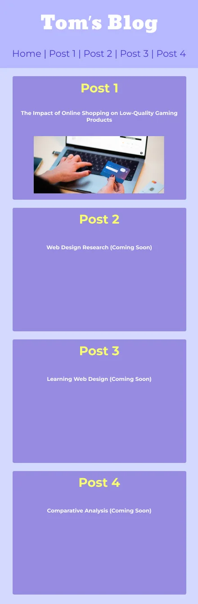
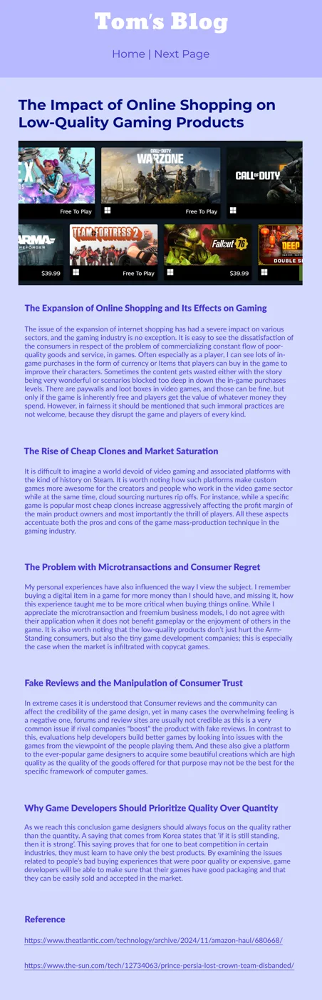
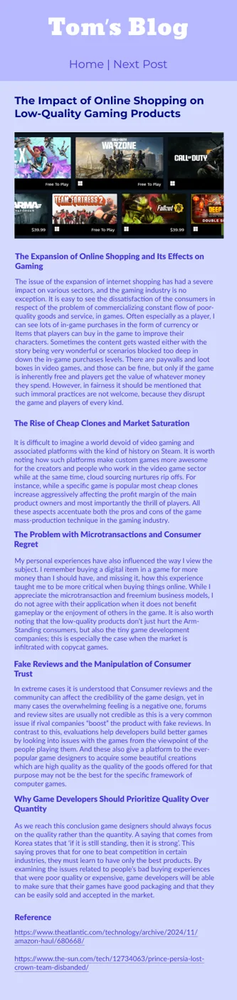

DES 117 · WEB / UI · COURSEWORK
Responsive Blog Design
From layout mockups to a coded multi-post blog — typography, content hierarchy and mobile considerations.

01 / DESIGN
A readable content system
The source folder includes desktop and mobile homepage and article mockups, design revision notes, and the HTML/CSS blog with five post pages. These document a layout that was tested and refined across different screen formats.
02 / IMPLEMENTATION
From mockup to markup
The coded blog organizes written posts through a shared navigation and article layout. The archived site is included here as an original coursework example; its code is preserved rather than rewritten as a new app.



PROJECT MATERIALS